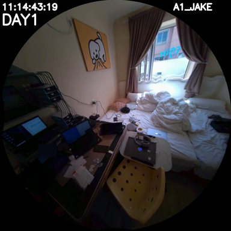

WorldMM spatial-hero · before / after
SH-A-001 (A: Object location at time)
3-axis baseline
episodicsemanticvisual ⊘spatial absent
Adining table
Bbedroom
Canother box
Dhard drive
why it missed
R1 episodic: [DAY1 11:14:00 - DAY1 11:14:30] "Yes, your second life is all in here," I say as I look back and forth. I point to th...
B
wrong pickbaseline locks onto non-spatial context
→
add
spatial
spatial
4-axis with spatial
episodicsemanticvisual ⊘+ spatial
Adining table
Bbedroom
Canother box
Dhard drive
spatial reasoning gist
R1 spatial: (hard drive, on, dining_table) (box, on, another_box) (I, located_in, bedroom) (data, in, hard_drive)
real DAY1 triple at chunk timestamp
[DAY1 11:14:30] hard drive [on] dining table
A
correct letterdining table
agent evidence

spatial chunk · DAY1 11:14:30
(hard drive, on, dining table)

visual retrieval top-1
(laptop, on, bed) · score 0.253
visual axis (4-axis correct/3)
OFF (spatial only)3/3
CLIP middle-frame0/3
GPT16 prose + MiniLM3/3
GPT structured triples3/3
same 3 trials × n=10 visualised on the capstone deck